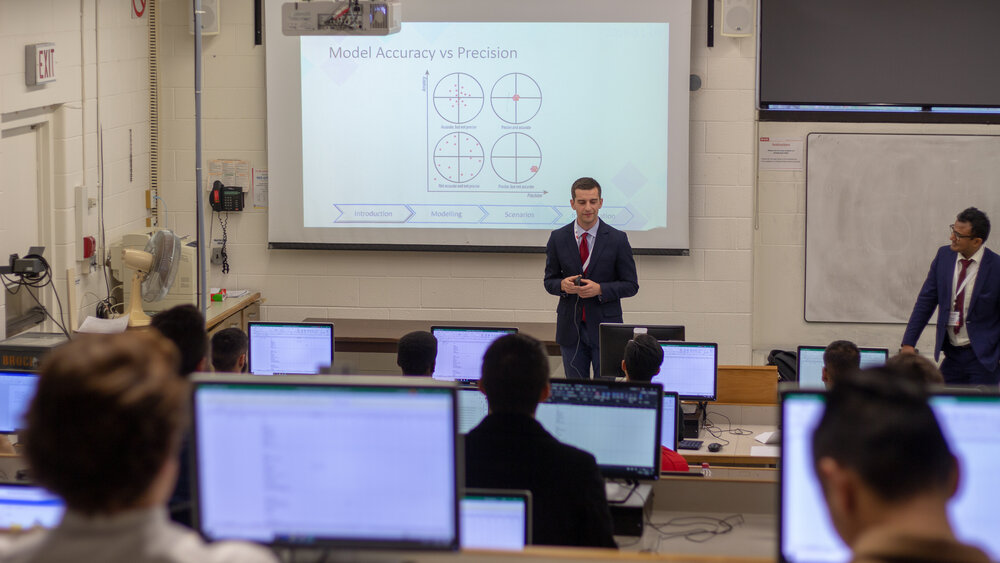
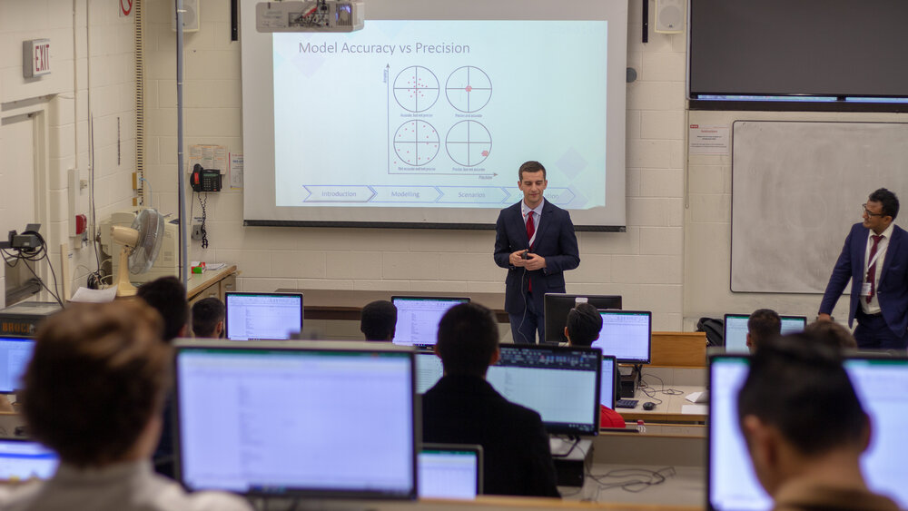

Our Datathon Analytics Conferences have brought industry leaders to share their knowledge and experience with over 1000 future data scientists.
Past speakers have included data scientists, analysts, and data leaders from companies like Shopify, RBC, Micsorsoft, IBM and many more.


Our industry led Workshops and Case Competitions have given students the opportunity to learn from the best in the field and gain interships in the process.
Past workshops have taught students the basics of working with data in languages like Python, R, and SQL.
We've also had classes and case competitions focused on teaching students how to use data to tell stories, apply machine learning to real problems, and create effective visualizations.

 

Thank you for learning with us!
After 5 years of running Datathon events, we've had the opportunity to work with some amazing people. Unfortunately, we've decided to take a break from running events for the time being. We hope to be back in the future! We'd like to thank all our supports and sponsors for helping us make these events possible. We'd also like to thank all the students who have participated in our events and helped make them a success. Watch our social media for updates on future events!
The Datathon Team from left to right: Roelof, Nour, Shakti, Conrad, Thomas, and Ayanso.